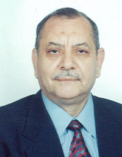


<div id="Magazine_Main">
<table class="Magazine_table" width="90%" border="0" cellspacing="1" cellpadding="1" id="Table1" height="159" dir="rtl">
    <tr>
        <td align="center" colspan="2">
          
                
           
        </td>

    </tr>
    <tr>
        <td align="center" width="62%">
                  <p class="Magazine_p" align="right">
            <a class="Magazine_a_header" href="mkal/22/maher_bhery22.htm">
          
                    <b><span style="text-decoration: none"> </span><span lang="ar-eg">افتتاحية العدد:لم تكن يوما صنيعة الأحد .. 
			ولن تكون </span></b>
            </a>
                      </p>
            
            <b><span style="text-decoration: none"> 
                <a class="Magazine_a" href="mkal/22/maher_bhery22.htm">رئيس المحكمة الدستورية العليا 
            </b> <br />
          بقلم المستشار/ ماهر البحيرى

            <a />

        </td>
        <td width="37%" align="right">
            </td>

    </tr>
    <tr>
        <td align="center" width="62%">
             <p class="Magazine_p" align="right">

                <b><a class="Magazine_a_header" href="mkal/22/maher_samy22.htm">
                    <span style="text-decoration: none"> </span><span lang="ar-eg">دستور 
			الثورة .. فى ميزان التاريخ </span> </a>
                    </p>
          
            <a class="Magazine_a" href="mkal/22/maher_samy22.htm">
                   
                    بقلم المستشار الدكتور / ماهر 
			سامى
                    <br>
                    <span style="text-decoration: none" lang="ar-eg">
                    </span>نائب رئيس المحكمة الدستورية العليا</a>

        </td>
        <td width="37%" align="right">
            <p align="center">
                
        </td>

    </tr>
    <tr>
        <td align="center" width="62%">
             <p class="Magazine_p" align="right">
            <b><a class="Magazine_a_header" href="mkal/22/samy gamal22.htm">
          <span lang="ar-eg">الشريعة 
		الإسلامية .. مصدر رسمى للقانون أم مصدر موضعى للتشريع ؟</span>
		</a><br />

                <a class="Magazine_a_header" href="mkal/22/samy gamal22.htm">
          <span lang="ar-eg">الشريعة 
	</span> قراءة فى 
		ص المادة الثانية من الدستور</a>


                </p>
            
        
            <a  class="Magazine_a" href="mkal/22/samy gamal22.htm">
                بقلم الدكتور / سامى جمال الدين<br>
                أستاذ 
		القانون الإدارى والدستور _ بكلية الحقوق - جامعة الإسكندرية</a></b></td>
        <td width="37%" align="right">
            
    </tr>
    <tr>
        <td align="center" width="62%">

               <p class="Magazine_p" align="right">
            <b><a class="Magazine_a_header" href="mkal/22/fthy-fkry22.htm">
                <span style="text-decoration: none"> </span><span lang="ar-eg">جواز الإرتداد عن الشرعية الدستورية إلى الشرعية الثورية</span></a>
                </p>
            <a class="Magazine_a" href="mkal/22/fthy-fkry22.htm">
            (دراسة حالة للثورة 
		المصرية)<br>
                بقلم الدكتور / فتحى فكرى<br>
                أستاذ القانون العام 
		كلية الحقوق - جامعة القاهرة</a></b></td>
        <td width="37%" align="right">
            
    </tr>
    <tr>
        <td align="center" width="62%">

              <p class="Magazine_p" align="right">

            <b><a class="Magazine_a_header" href="mkal/22/amad22.htm">
                <span style="text-decoration: none"> </span><span lang="ar-eg">نظر فى 
		النظام الدستورى المصرى الحديث</span></a></p>
            
            
            <a class="Magazine_a" href="mkal/22/amad22.htm">
                بقلم المسشار الدكتور / عماد 
		البشرى
                <br>
                عضو هيئة المفوضين</a></b></td>
        <td width="37%" align="right">
            
    </tr>
    <tr>
        <td align="center" width="62%">

              <p class="Magazine_p" align="right">
            <b><a class="Magazine_a_header"  href="mkal/22/tamer 22.htm">
                <span lang="ar-eg">الضمانات 
		الدستورية لحماية الاستثمار</span></a>
                </p>
            <a  class="Magazine_a" href="mkal/22/tamer 22.htm">
          
                بقلم المسشار الدكتور / تامر ريمون<br>
                عضو هيئة المفوضين</a></b></td>
        <td width="37%" align="right">
            
    </tr>
</table>

   </div>